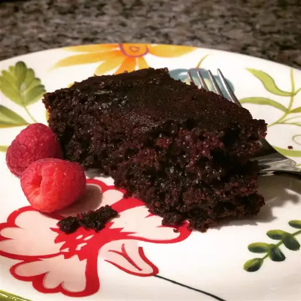

Chocolate Cake Recipe

Photo taken by
christineandwilly
Description
Mouth-watering, delicious and tasty chocolate cake will be yours in following this recipe
Ingredients
- 1/2 cup vegetable oil
- 4 oz margarine
- 6 tbsp cocoa powder [5 tbsp cocoa + 1 tbsp coffee]
- 1 cup water
- 2 cups flour [cake and pastry]
- 1 tsp bicarbonate of soda [baking soda]
- 2 eggs
- 1/2 cup sour milk
- 1 tsp vanilla
Steps
-
Put cocoa powder, oil, margarine and water into a pot.
Place on fire and melt [Mix while melting]. Put to cool.
- Sift flour and baking soda. Add sugar and mix together.
- Pour sour milk into container.
- Add eggs one by one; add vanilla and whisk.
- Pour into chocolate mixture and mix.
- Make a hole in the middle of dry mixture.
- Pour in liquid and mix [Do not overmix].
- Pour into greased and floured baking tin.
- Bake for ≈ 50 mins at 350oF or until done.
Tips
-
Can substitute 1 tbsp coffee for 1 tbsp cocoa for heightened flavour.
Also, add a little rum (removes rawness of eggs).
- Make sour milk by adding about 2 capsful of lime juice to 1/2 cup milk.